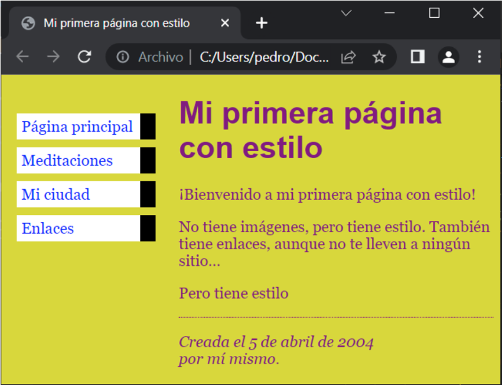

CSS
- CSS en línea: Este estilo permite aplicar estilos directamente a un elemento HTML utilizando el atributo
"style". Los elementos que se pueden utilizar con CSS en línea son los siguientes:
- Etiquetas HTML: Puedes aplicar estilos a una etiqueta específica, como h1, p, a, div, entre otras.
- Atributos HTML: Puedes aplicar estilos a atributos específicos, como el atributo "src" de la etiqueta img, el atributo "href" de la etiqueta a, entre otros.
- CSS interno: Este estilo permite aplicar estilos a un documento HTML completo utilizando la etiqueta "style"
dentro de la sección "head" del documento.
Los elementos que se pueden utilizar con CSS interno son los siguientes:- Clases: Se pueden crear clases utilizando el selector de clase "." y luego aplicar estilos a los elementos que tienen esa clase.
- ID: Se pueden crear IDs utilizando el selector de ID "#" y luego aplicar estilos a los elementos que tienen ese ID.
- CSS externo: Este estilo permite aplicar estilos a un documento HTML completo utilizando un archivo CSS
separado.
Los elementos que se pueden utilizar con CSS externo son los siguientes:- Selectores de etiqueta: Puedes aplicar estilos a una etiqueta específica, como h1, p, a, div, entre otras.
- Selectores de clase: Puedes aplicar estilos a elementos que tienen una clase específica.
- Selectores de ID: Puedes aplicar estilos a elementos que tienen un ID específico.
- Selectores de atributo: Puedes aplicar estilos a elementos que tienen un atributo específico, como el atributo "src" de la etiqueta img, el atributo "href" de la etiqueta a, entre otros.
-
CSS en cascada (CSS cascading): Este estilo permite la creación de reglas de estilo que se aplican en cascada
de arriba a abajo en función de la especificidad
y la importancia de las reglas. Los elementos que se pueden utilizar con CSS en cascada son los mismos que los elementos que se pueden utilizar con CSS externo.
